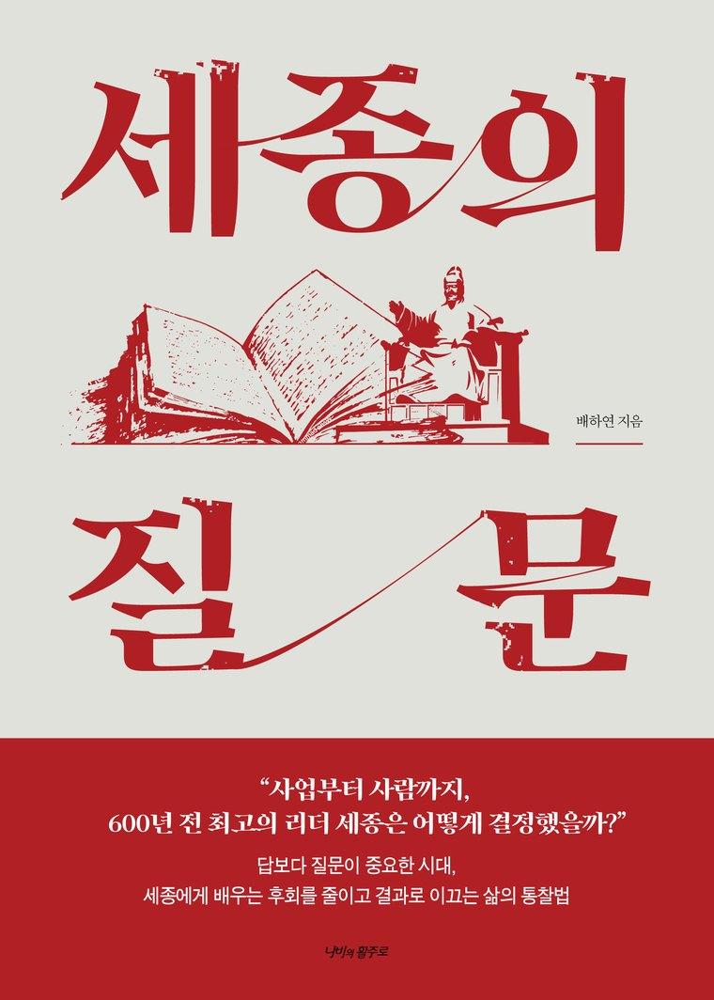

2026. 10. 09 출간 · 지금 서점에서 판매 중

지금 당신 곁에는 세종이 있습니까?
계좌 잔고 8만 원의 절망 속에서 세종실록 10,800쪽을 완독하고 찾아낸,
흔들리지 않는 삶과 리더십의 판단 기준.
이 책에 대하여
《세종의 질문》은 《세종실록》 원문에서 찾아낸 세종의 질문 방식을, 혼자 결정해야 하는 오늘의 리더가 쓸 수 있는 판단 기준으로 옮긴 책입니다. 프롤로그와 에필로그를 포함해 6부 39꼭지로 구성되어 있습니다.
AI가 몇 초 만에 정답을 쥐어주는 시대에도 마지막 결정은 온전히 나의 몫입니다. 세종은 답을 빨리 내리는 사람이 아니었습니다. 모른다고 말하고, 신하들에게 다시 묻고, 좋은 뜻이 실제 삶에 닿는지 끝까지 살폈습니다. 지금 필요한 것은 더 많은 답이 아니라, 그 답을 고를 기준입니다.
이런 순간
추천사
리더십이란 한 번의 화려한 선언이 아니라 흔들리는 순간마다 돌아갈 기준을 끝까지 책임지는 일이다.이준 세종대왕 21대 직계손
정답을 대신 내려주기보다 더 좋은 질문을 품게 하고, 각자의 삶에서 자신만의 기준을 세울 수 있도록 돕는다.최홍식 세종대왕기념사업회 이사장
나는 오래도록 세종을 연구하고 가르쳐 왔지만, 세종을 ‘사수’로 모시고 출근시키는 책은 처음 만났다.김슬옹 세종국어문화원 원장 · 훈민정음 연구자
평범한 인간관계 속에서 자기 자신의 주인인 독자가 취하면 좋을 작고 구체적인 원리들을 이야기한다.백기복 국민대학교 경영대학 명예교수 · 《대왕 세종》 저자
외 조연심(지식소통가), 조원섭(브랜드워커 파트너스 공동대표), 박제인(사람북닷컴 대표) 추천
목차
프롤로그 — 지금 당신 곁에는 세종이 있습니까
에필로그 — 세종이라면 무엇을 먼저 물었을까
혼자 고민하는 당신에게,
가장 든든한 판단의 기준을 선물하세요
온·오프라인 서점에서 지금 바로 만나보세요.
바로 구매하기 → 기업·기관 단체 구매 문의 (저자 특강 함께 진행 가능)지은이
2018년부터 세종실록 원문을 읽어온 리더십 강사입니다. 코로나19 시기 《세종실록》 1만 800페이지를 처음부터 끝까지 완독했고, 그 기록을 바탕으로 《세종의 질문》을 썼습니다. 국회 세종나신날 629돌 기념식과 문화체육관광부 세종나신날 627돌 기념행사를 기획·진행했고, 시원스쿨과 해커스HRD의 온라인 클래스를 런칭했습니다. 국민대학교 리더십과코칭MBA 석사이며, 팀장과 신임 리더를 위한 강의와 경복궁 리더십 투어를 진행합니다.
강의 · 경복궁 리더십 투어 문의 → 나의 세종 리더십 유형 찾기 (3분 테스트) → 강연 영상 보기 — 국회 특강 (15분) →